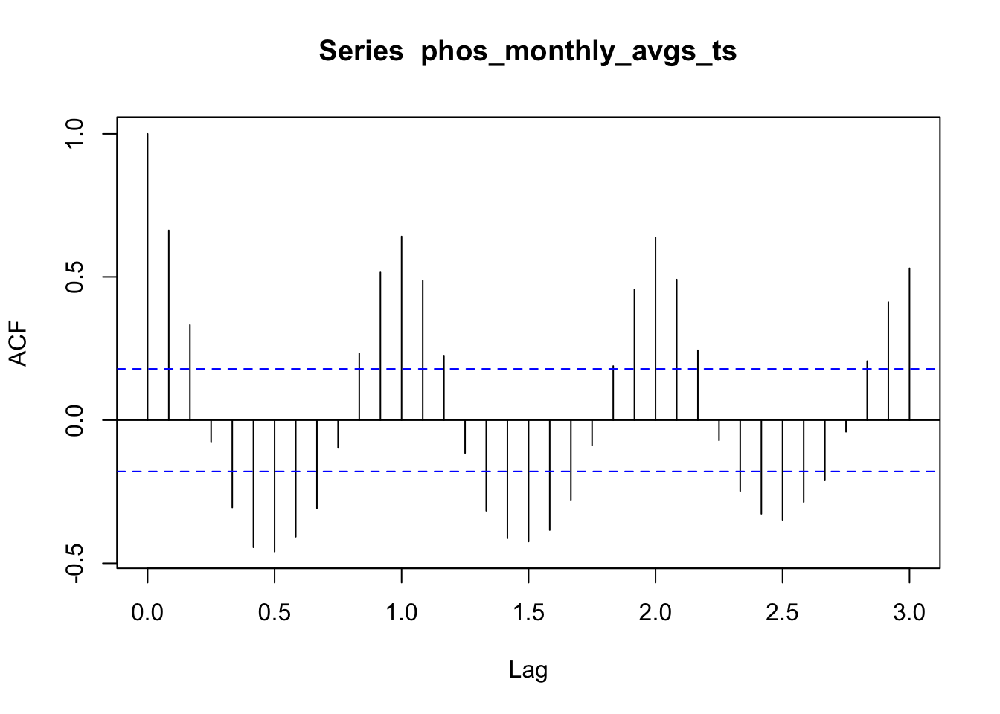

Time series analysis of nitrogen and phosphorus concentrations in Chesapeake Bay tidal regions since 2010 introduction of TMDL requirements
This analysis seeks to better understand the seasonality of nitrogen and phosphorus concentration in Chesapeake Bay tidal regions, in addition to any non-seasonal trends over the last decade.
Since the 2010 introduction of TMDL requirements, what seasonal and non-seasonal trends are present for nitrogen and phosphorus concentrations in Chesapeake Bay tidal regions?
Introduction
In December 2010, the EPA took an unprecedented step in enacting federal policy specific to the Chesapeake Bay, the largest estuary in the United States [@]. Specifically, the EPA established Total Maximum Daily Load (TMDL) requirements for the amount of nitrogen, phosphorus, and sediment that is allowed in the Bay. Nitrogen and phosphorus are the two pollutants primarily responsible for algal blooms, which cause marine dead zones through taking in dissolved oxygen and blocking sunlight. Sediment also contributes to dead zones by blocking sunlight, leading it to be included in the 2010 TMDL requirements.
This analysis will focus on nitrogen and phosphorus, the two nutrient pollutants regulated under the 2010 TMDL requirements. A 2022 study found that agricultural runoff was the largest source of nutrient pollution, accounting for 48% of nitrogen and 27% of phosphorus in the Chesapeake Bay [@]. Both of these pollutants also get to the Bay as a result of urban and suburban runoff, wastewater treatment plants releasing treated water, and natural sources (i.e., runoff from forests, wetlands, etc.). In addition, about 25% of nitrogen that ends up in the Bay comes from air pollution that is originally emitted to the atmosphere by sources such as cars and factories [@]. Through a process called atmospheric deposition, these nitrogen compounds react with other chemicals to become nitrous oxides, which can be deposited back to Earth’s surface through precipitation or as dry deposition.
Through conducting a time series analysis of post-2010 nitrogen and phosphorus concentration measurements, my goal is to better understand how concentrations have changed since the introduction of TMDL requirements. I’m also interested in the nature of any seasonality and whether the three time series components (i.e., seasonal, trend, and random) are consistent across both nitrogen and phosphorus.
Data
Yearly water quality data on the Chesapeake Bay’s tidal and non-tidal regions going back to 1984 is publicly available on the Chesapeake Bay Program’s DataHub. Data is organized into either Tier 1, 2, or 3 depending on how it was collected. While Tier 1 and 2 data can be collected by any interested group, Tier 3 data is collected by monitoring stations overseen by experienced professionals. Only Tier 3 data can be used for governmental regulatory assessments.
For my analysis, I will be using 2010-2019 Tier 3 data collected at 143 different monitoring stations positioned throughout the Chesapeake Bay tidal regions, which includes the mainstem Bay and tributary components. Across the 10 years that I’m looking at, I will be using 43,809 observations of total nitrogen concentration and 43,590 observations of total phosphorus concentration.
Code
# Import necessary R packageslibrary(tidyverse)library(readxl)library(tsibble)library(feasts)library(generics)# Create a vector of data URLsexcel_urls <-c('https://datahub-content.chesapeakebay.net/traditional_annual_tidal_02jun21/2019_CEDR_tidal_data_01jun21.xlsx','https://datahub-content.chesapeakebay.net/traditional_annual_tidal_02jun21/2018_CEDR_tidal_data_01jun21.xlsx','https://datahub-content.chesapeakebay.net/traditional_annual_tidal_02jun21/2017_CEDR_tidal_data_11oct18.xlsx','https://datahub-content.chesapeakebay.net/traditional_annual_tidal_02jun21/2016_CEDR_tidal_data_15jun17.xlsx','https://datahub-content.chesapeakebay.net/traditional_annual_tidal_02jun21/2015_CEDR_tidal_data_15jun17.xlsx','https://datahub-content.chesapeakebay.net/traditional_annual_tidal_02jun21/2014_CEDR_tidal_data_15jun17.xlsx','https://datahub-content.chesapeakebay.net/traditional_annual_tidal_02jun21/2013_CEDR_tidal_data_15jun17.xlsx','https://datahub-content.chesapeakebay.net/traditional_annual_tidal_02jun21/2012_CEDR_tidal_data_15jun17.xlsx','https://datahub-content.chesapeakebay.net/traditional_annual_tidal_02jun21/2011_CEDR_tidal_data_15jun17.xlsx','https://datahub-content.chesapeakebay.net/traditional_annual_tidal_02jun21/2010_CEDR_tidal_data_15jun17.xlsx')# Create a temporary directory to store downloaded filestemp_dir <-tempdir()# Create an empty list to store data framesdfs <-list()# Loop through each URL, extract file name, define local file path, download file, read into R, and append to list of data framesfor (url in excel_urls) { file_name <-basename(url) local_path <-file.path(temp_dir, file_name)download.file(url, destfile = local_path, mode ="wb") wq_data <- readxl::read_excel(local_path, sheet =1) dfs[[file_name]] <- wq_data}
Code
# Combine all data frames into a single data framewq_data_combined <-bind_rows(dfs)
Code
# Wrangle data for relevant column variables, and filter for TN (total nitrogen)nitr_data <- wq_data_combined %>% dplyr::select("MonitoringLocation", "SampleDate", "Parameter", "MeasureValue", "Unit", "Latitude", "Longitude") %>%filter(Parameter=="TN")# Wrangle data for relevant column variables, and filter for TP (total phosphorus)phos_data <- wq_data_combined %>% dplyr::select("MonitoringLocation", "SampleDate", "Parameter", "MeasureValue", "Unit", "Latitude", "Longitude") %>%filter(Parameter=="TP")# Remove unnecessary data and values from environmentrm(wq_data, wq_data_combined, dfs)rm(excel_urls, file_name, local_path, temp_dir, url)# Summarize nitrogen data by year-month, and store as tsibblenitr_monthly_avgs_ts <- nitr_data %>%mutate(yr_mo = tsibble::yearmonth(SampleDate)) %>%group_by(yr_mo) %>%summarize(monthly_avg =mean(MeasureValue, na.rm =TRUE)) %>% tsibble::as_tsibble()# Create data frame version, and convert year-months to Date class (helpful for plotting)nitr_monthly_avgs_df <-as.data.frame(nitr_monthly_avgs_ts)nitr_monthly_avgs_df$yr_mo <-as.Date(nitr_monthly_avgs_ts$yr_mo, format ="%Y-%m")
Methods
Moving average
Autocorrelation function
Seasonal-trend decomposition model using locally estimated scatterplot smoothing (LOESS)
Results
Code
# Compute nitrogen monthly moving average, and store as tsibblenitr_monthly_avgs_ts <- nitr_data %>%mutate(yr_mo = tsibble::yearmonth(SampleDate)) %>%group_by(yr_mo) %>%summarize(monthly_avg =mean(MeasureValue, na.rm =TRUE)) %>% tsibble::as_tsibble()# Create data frame version, and convert year-months to Date class (helpful for plotting)nitr_monthly_avgs_df <-as.data.frame(nitr_monthly_avgs_ts)nitr_monthly_avgs_df$yr_mo <-as.Date(nitr_monthly_avgs_ts$yr_mo, format ="%Y-%m")# Plot monthly average nitrogen concentration as a function of year-monthnitr_monthly_avgs_df %>%ggplot(aes(x = yr_mo, y = monthly_avg)) +stat_summary(geom ='line', fun ='mean') +labs(x ='Year-Month', y ='Monthly Mean Concentration (mg/L)', title ="Nitrogen in Chesapeake Bay (2010-2019)") +scale_x_date(date_breaks ="1 year", date_minor_breaks ="6 months", date_labels ="%Y-%m") +theme_bw() +theme(plot.title =element_text(hjust =0.5))
Code
# Compute phosphorus monthly moving average, and store as tsibblephos_monthly_avgs_ts <- phos_data %>%mutate(yr_mo = tsibble::yearmonth(SampleDate)) %>%group_by(yr_mo) %>%summarize(monthly_avg =mean(MeasureValue, na.rm =TRUE)) %>% tsibble::as_tsibble()# Create data frame version, and convert year-months to Date class (helpful for plotting)phos_monthly_avgs_df <-as.data.frame(phos_monthly_avgs_ts)phos_monthly_avgs_df$yr_mo <-as.Date(phos_monthly_avgs_ts$yr_mo, format ="%Y-%m")# Plot monthly average phosphorus concentration as a function of year-monthphos_monthly_avgs_df %>%ggplot(aes(x = yr_mo, y = monthly_avg)) +stat_summary(geom ='line', fun ='mean') +labs(x ='Year-Month', y ='Monthly Mean Concentration (mg/L)', title ="Phosphorus in Chesapeake Bay (2010-2019)") +scale_x_date(date_breaks ="1 year", date_minor_breaks ="6 months", date_labels ="%Y-%m") +theme_bw() +theme(plot.title =element_text(hjust =0.5))

Code
# Plot autocorrelation function for nitrogen with lags going back three yearsacf(nitr_monthly_avgs_ts, lag.max =36)
Code
# Plot autocorrelation function for phosphorus with lags going back three yearsacf(phos_monthly_avgs_ts, lag.max =36)
Code
# Conduct STL time series analysis for nitrogen with two-year seasons, and extract componentsnitr_decomp_yearly <- nitr_monthly_avgs_ts %>% fabletools::model(feasts::STL(monthly_avg, t.window =24)) %>% generics::components()# Plot STL time series analysis of nitrogen concentrationautoplot(nitr_decomp_yearly) +labs(title ="STL Time Series Analysis of Nitrogen Concentration", x ="Year Month")
Code
# Conduct STL time series analysis for phosphorus with two-year seasons, and extract componentsphos_decomp_yearly <- phos_monthly_avgs_ts %>% fabletools::model(feasts::STL(monthly_avg, t.window =24)) %>% generics::components()# Plot STL time series analysisautoplot(phos_decomp_yearly) +labs(title ="STL Time Series Analysis of Phosphorus Concentration", x ="Year Month")
# Run a regressionnitr_season_reg <-lm(monthly_avg ~ season_year, data = nitr_decomp_yearly)# Inspect the resultssummary(nitr_season_reg)
Call:
lm(formula = monthly_avg ~ season_year, data = nitr_decomp_yearly)
Residuals:
Min 1Q Median 3Q Max
-0.28803 -0.07036 -0.01624 0.04451 0.50728
Coefficients:
Estimate Std. Error t value Pr(>|t|)
(Intercept) 0.89766 0.01029 87.26 <2e-16 ***
season_year 1.03839 0.08624 12.04 <2e-16 ***
---
Signif. codes: 0 '***' 0.001 '**' 0.01 '*' 0.05 '.' 0.1 ' ' 1
Residual standard error: 0.1127 on 118 degrees of freedom
Multiple R-squared: 0.5513, Adjusted R-squared: 0.5475
F-statistic: 145 on 1 and 118 DF, p-value: < 2.2e-16
Code
# Run a regressionphos_season_reg <-lm(monthly_avg ~ season_year, data = phos_decomp_yearly)# Inspect the resultssummary(phos_season_reg)
Call:
lm(formula = monthly_avg ~ season_year, data = phos_decomp_yearly)
Residuals:
Min 1Q Median 3Q Max
-0.0144318 -0.0031716 -0.0003977 0.0037799 0.0156940
Coefficients:
Estimate Std. Error t value Pr(>|t|)
(Intercept) 0.0565260 0.0005042 112.11 <2e-16 ***
season_year 0.9844122 0.0511039 19.26 <2e-16 ***
---
Signif. codes: 0 '***' 0.001 '**' 0.01 '*' 0.05 '.' 0.1 ' ' 1
Residual standard error: 0.005523 on 118 degrees of freedom
Multiple R-squared: 0.7587, Adjusted R-squared: 0.7567
F-statistic: 371.1 on 1 and 118 DF, p-value: < 2.2e-16
Code
# Run a regressionnitr_trend_reg <-lm(season_adjust ~ trend, data = nitr_decomp_yearly)# Inspect the resultssummary(nitr_trend_reg)
Call:
lm(formula = season_adjust ~ trend, data = nitr_decomp_yearly)
Residuals:
Min 1Q Median 3Q Max
-0.23711 -0.06182 -0.00003 0.04863 0.42548
Coefficients:
Estimate Std. Error t value Pr(>|t|)
(Intercept) -0.3337 0.1177 -2.834 0.00541 **
trend 1.3731 0.1310 10.478 < 2e-16 ***
---
Signif. codes: 0 '***' 0.001 '**' 0.01 '*' 0.05 '.' 0.1 ' ' 1
Residual standard error: 0.08117 on 118 degrees of freedom
Multiple R-squared: 0.482, Adjusted R-squared: 0.4776
F-statistic: 109.8 on 1 and 118 DF, p-value: < 2.2e-16
Code
# Run a regressionphos_trend_reg <-lm(season_adjust ~ trend, data = phos_decomp_yearly)# Inspect the resultssummary(phos_trend_reg)
Call:
lm(formula = season_adjust ~ trend, data = phos_decomp_yearly)
Residuals:
Min 1Q Median 3Q Max
-0.0094940 -0.0030672 -0.0005091 0.0028284 0.0122709
Coefficients:
Estimate Std. Error t value Pr(>|t|)
(Intercept) -0.008829 0.007288 -1.212 0.228
trend 1.157817 0.128921 8.981 5.11e-15 ***
---
Signif. codes: 0 '***' 0.001 '**' 0.01 '*' 0.05 '.' 0.1 ' ' 1
Residual standard error: 0.004259 on 118 degrees of freedom
Multiple R-squared: 0.406, Adjusted R-squared: 0.401
F-statistic: 80.66 on 1 and 118 DF, p-value: 5.115e-15
Code
# Run a regressionnitr_rem_reg <-lm(season_adjust ~ remainder, data = nitr_decomp_yearly)# Inspect the resultssummary(nitr_rem_reg)
Call:
lm(formula = season_adjust ~ remainder, data = nitr_decomp_yearly)
Residuals:
Min 1Q Median 3Q Max
-0.10433 -0.05031 0.01394 0.03938 0.09735
Coefficients:
Estimate Std. Error t value Pr(>|t|)
(Intercept) 0.896582 0.005036 178.05 <2e-16 ***
remainder 1.172299 0.060511 19.37 <2e-16 ***
---
Signif. codes: 0 '***' 0.001 '**' 0.01 '*' 0.05 '.' 0.1 ' ' 1
Residual standard error: 0.05516 on 118 degrees of freedom
Multiple R-squared: 0.7608, Adjusted R-squared: 0.7588
F-statistic: 375.3 on 1 and 118 DF, p-value: < 2.2e-16
Code
# Run a regressionphos_rem_reg <-lm(season_adjust ~ remainder, data = phos_decomp_yearly)# Inspect the resultssummary(phos_rem_reg)
Call:
lm(formula = season_adjust ~ remainder, data = phos_decomp_yearly)
Residuals:
Min 1Q Median 3Q Max
-0.0098639 -0.0020605 -0.0002014 0.0022335 0.0048012
Coefficients:
Estimate Std. Error t value Pr(>|t|)
(Intercept) 0.0564406 0.0002759 204.57 <2e-16 ***
remainder 1.0794588 0.0649103 16.63 <2e-16 ***
---
Signif. codes: 0 '***' 0.001 '**' 0.01 '*' 0.05 '.' 0.1 ' ' 1
Residual standard error: 0.003022 on 118 degrees of freedom
Multiple R-squared: 0.7009, Adjusted R-squared: 0.6984
F-statistic: 276.6 on 1 and 118 DF, p-value: < 2.2e-16
Code
# Run a regressionnitr_trend_est <-lm(trend ~ yr_mo, data = nitr_decomp_yearly)# Inspect the resultssummary(nitr_trend_est)
Call:
lm(formula = trend ~ yr_mo, data = nitr_decomp_yearly)
Residuals:
Min 1Q Median 3Q Max
-0.084653 -0.045620 -0.000179 0.032870 0.135876
Coefficients:
Estimate Std. Error t value Pr(>|t|)
(Intercept) 1.121e+00 7.856e-02 14.268 < 2e-16 ***
yr_mo -1.365e-05 4.775e-06 -2.859 0.00502 **
---
Signif. codes: 0 '***' 0.001 '**' 0.01 '*' 0.05 '.' 0.1 ' ' 1
Residual standard error: 0.05514 on 118 degrees of freedom
Multiple R-squared: 0.0648, Adjusted R-squared: 0.05687
F-statistic: 8.176 on 1 and 118 DF, p-value: 0.005022
Code
# Run a regressionphos_trend_est <-lm(trend ~ yr_mo, data = phos_decomp_yearly)# Inspect the resultssummary(phos_trend_est)
Call:
lm(formula = trend ~ yr_mo, data = phos_decomp_yearly)
Residuals:
Min 1Q Median 3Q Max
-0.0054726 -0.0011369 -0.0002914 0.0014229 0.0039014
Coefficients:
Estimate Std. Error t value Pr(>|t|)
(Intercept) 9.174e-02 2.858e-03 32.10 <2e-16 ***
yr_mo -2.150e-06 1.737e-07 -12.38 <2e-16 ***
---
Signif. codes: 0 '***' 0.001 '**' 0.01 '*' 0.05 '.' 0.1 ' ' 1
Residual standard error: 0.002006 on 118 degrees of freedom
Multiple R-squared: 0.5649, Adjusted R-squared: 0.5612
F-statistic: 153.2 on 1 and 118 DF, p-value: < 2.2e-16
Conclusion
Citation
BibTeX citation:
@online{ghanadan2023,
author = {Ghanadan, Linus},
title = {Time Series Analysis of Nitrogen and Phosphorus
Concentrations in {Chesapeake} {Bay} Tidal Regions Since 2010
Introduction of {TMDL} Requirements},
date = {2023-12-12},
url = {https://linusghanadan.github.io/blog/2023-12-12-post/},
langid = {en}
}
For attribution, please cite this work as:
Ghanadan, Linus. 2023. “Time Series Analysis of Nitrogen and
Phosphorus Concentrations in Chesapeake Bay Tidal Regions Since 2010
Introduction of TMDL Requirements.” December 12, 2023. https://linusghanadan.github.io/blog/2023-12-12-post/.